寶福山／沙田 PoFookHill
九龍半島中心部から北に移動する。密集していた高層ビルもまばらになりはじめた頃沙田の駅に着く。
香港のベットタウンである。
その沙田の駅のすぐ近くに寶福山というお寺がある。
実はここ、この後登場する萬佛寺へ行く途中なのでついで参りをする人も結構多いようだ。
寺は丘の上にあり麓からはエレベーターを乗り継いで上がっていく。
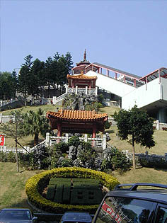
横を見ると何と6人乗り位の小さなケーブルカーまである。まさにいたれりつくせりのアプローチである。
まるでどこぞの温泉旅館がもっている旅館専用のケーブルカーみたいである。
さて、上るとそこは大雄寳殿。
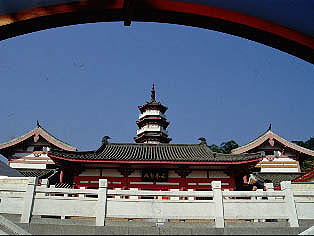 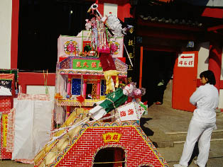
何やら賑やかな飾り付けがあったので「おっ！お祭りかい？」と思ったら、お葬式だった。
多少不謹慎な気もしたがせっかくの機会だから葬式見物をさせてもらった。
本堂前のこの楽し気な飾りものはみ〜んな亡くなった人への供物なのだそうだ。
ちなみに上写真右の人は葬儀の参列者。喪服は白、ほとんどがトレパン＆体操シャツのような服を着用していた。
体操着を着なければいけない程、激しい動きがあるのだろうか、葬式なのに‥
さらに近しい親族は伝統的な白い喪服を着ていた。
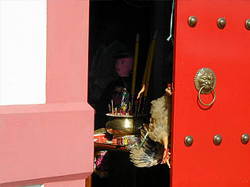
本堂の中。入口の扉に鶏が供えられていた。
この鶏、どういうわけかお経が終わったらすぐはずされてどこかに持っていかれてしまった。
中にも紙人形があったりしてあの世の召し使いなんでしょうか。
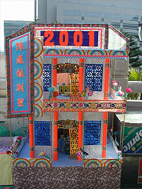 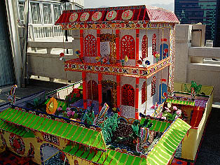
本堂の脇や前にも素晴らしすぎる紙の供物が山積みされている。
上の立派な建物も全部紙製。
燃やしてしまうのが勿体ないくらい精巧な造りである。家具は組み立て式で糊付け不要タイプでした。
あの世では庭付き一戸建て！凄くリアルな死後の世界。
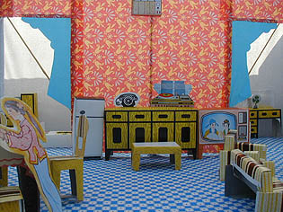
インテリアも含めてかなり細かく作り込んである。
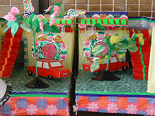 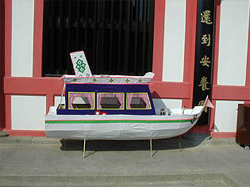
乗り物2題。もちろん紙製。この辺はキット製品でなく一点モノ。
あの世で乗り回す車とクルーザー。
この後、これらは燃やされて故人と一緒にあの世に行くという寸法である。
中国、少なくとも香港の人はこれらが必要な程リアルな死後観をもっているのだ。
「死んだおじいちゃんはお酒がすきだったからお墓にお酒をお供えしましょうね」的なレベルを遥かに超越した物すっごく現実的な世界観を持って行くあの世。
あの世に行くにも「あ、いけね、ケータイ忘れちゃった」とかそういうレベルの極楽は来世よりも現世、明日よりも今日、という刹那的な香港気質がよく現れているような気がしました。でも、絵に書いたような極楽浄土に行くよりも、現在の延長線上としての死後の世界の方がはるかに魅力的のように思う。
テレビから三国志が流れクルーザーを乗り回す日々の死後の世界。
さあ、皆さんもあの世に持って行きたいものをリストアップしてみましょう。
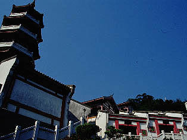 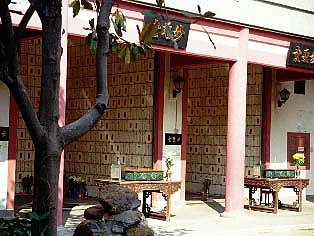
大雄寳殿の後ろには六角塔と納骨堂。
さっきお葬式をあげられていた人もここに入るんでしょうな。
お邪魔しました〜＆合掌
次へ行きましょう 香港珍寺遊戯に戻る 珍寺大道場に戻る